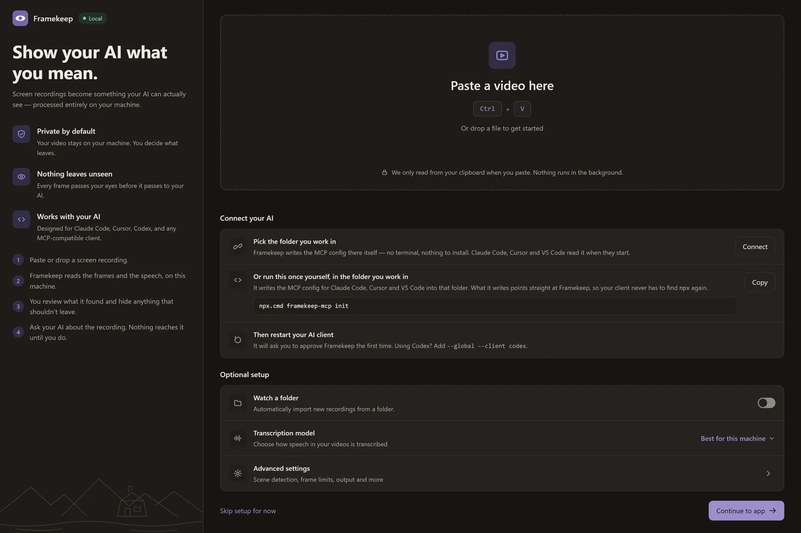
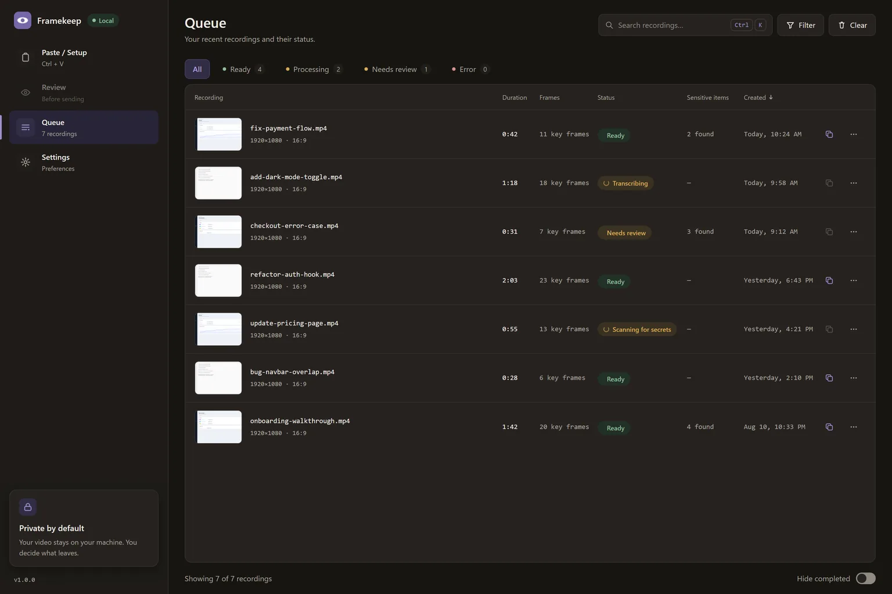
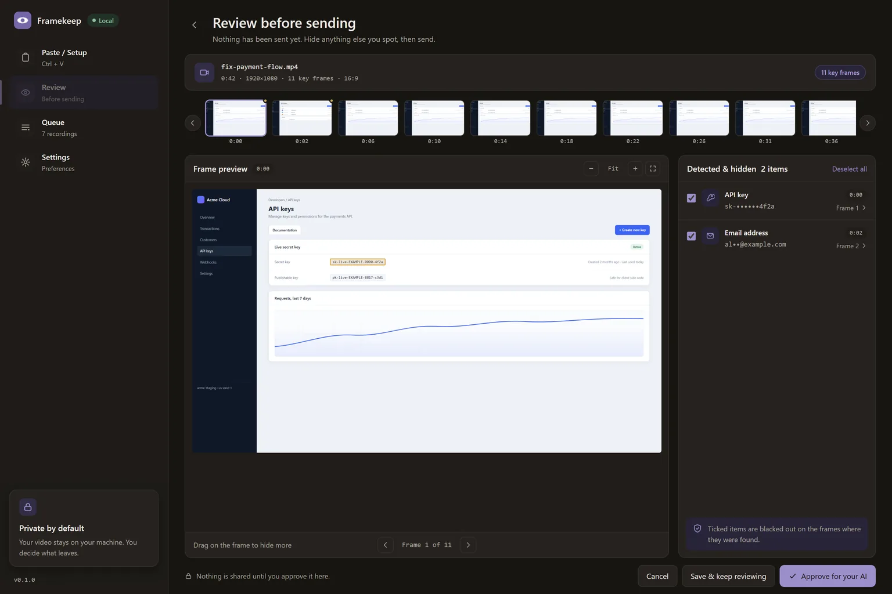

Show your AI what you mean.
Framekeep sees your screen, hides what shouldn't leave, and lets your AI see only what you approved — locally, privately, and on your terms.
The adapter above works today, on its own. Needs Node.js 20+.



Paste or drop a screen recording.
Speaks MCP — works with the tools you already use
The problem
Screens carry more than you want to share.
A screen recording is the fastest way to show an AI what happened. It is also the fastest way to hand it an API key, a customer's email, and a staging URL you forgot was on screen.
Too much risk
Keys, tokens and addresses sit in plain sight in the frames you would otherwise share without looking.
No control
Upload a video to a service and the decision about what it keeps has already been made for you.
Not built for screens
Generic video tools sample frames on a timer. Interfaces change in bursts, and the timer misses them.
Your data, their cloud
Most of the pipeline runs somewhere you cannot see, on hardware you do not own.
How it works
Four steps, and you are one of them.
The third step is a person looking at what was found. It is not optional, and there is no button to skip it.
Paste or drop a screen recording.
Copy a file and press Ctrl + Shift + V, or drop it into the window.
Framekeep reads the frames and the speech, on this machine.
Frames are chosen where the picture actually changes. Speech is transcribed locally with Whisper.
You review what it found and hide anything that shouldn't leave.
Everything detected is shown with a box around it. You decide what gets blacked out, and you can draw over anything the scan missed.
Ask your AI about the recording. Nothing reaches it until you do.
Approving unlocks a recording. It does not deliver one — your AI asks, and reads only what you approved.
Architecture
All on your machine. End to end.
Framekeep is the perception layer, not the reasoning layer. It decodes, selects, transcribes and redacts. Your AI does the thinking.
Everything is processed locally. Your video never leaves your machine.
Privacy & redaction
Privacy isn't a feature. It's the foundation.
Local by default
Decoding, frame selection and transcription all run on your machine.
You're in control
A recording waits until you have looked at it. There is no send-anyway button.
Redaction you approve
Finds API keys, tokens and emails — and never sends a frame you haven't seen.
No cloud. No accounts.
Nothing to sign up for. The one network request is downloading a speech model, and only when you ask.
Detected values are shown partly masked — enough to recognise, not enough to leak.
Built for screen recordings
Built for how you work.
Not a general video tool with a screen-recording mode. Every default in Framekeep was measured against real interface content.
- Auto-detect key frames. Interfaces change in bursts, not on a timer. Frame selection follows the picture, so a five-second scroll does not become forty near-identical frames.
- Find & redact secrets — with your approval. Text is read off each frame and checked against pattern rules, plus any words you add yourself.
- Local transcription with Whisper. Timestamped, so your AI can line up what was said with what was on screen.
- Queue, review, and manage recordings. A dense list showing the real stage of each one — extracting, transcribing, scanning, waiting for you.
Each row says which stage it is in, not only that something is happening.
Works with your AI
Works with the AI tools you already use.
Your AI stays the brain. Framekeep gives it eyes. It doesn't replace your AI tools — it makes them safer and smarter. Supports any MCP-compatible client.
Two tools, in the right order
video_map answers what is in a recording and when — cheap, text-shaped, no images. video_frames returns the frames for a moment your AI names. The map comes first, so nothing pulls twenty frames to answer a question about one.
One command, and never again
The config Framekeep writes points at an absolute path, never at npx. On Windows a client that spawns a bare npx fails outright — measured, and it is why a competing adapter does not start there at all.
Local by construction
No account. No cloud. No background watching.
Framekeep reads your clipboard when you paste, and at no other time. There is no clipboard monitor, no telemetry, and nothing to log in to.
Nothing to sign up for
No account, no API key for the default setup, no server on our side to send anything to.
The adapter is published
The piece that talks to your AI client is on npm as framekeep-mcp. You can read exactly what it does before you run it.
Source available
The source is on GitHub, licensed BUSL-1.1: use it for anything, including commercially and inside a company. Each version converts to Apache 2.0 four years after it is released. Not open source — the one thing the licence withholds is selling Framekeep itself.
Give your AI eyes.
Your screen. Your data. Your AI. Private by default.